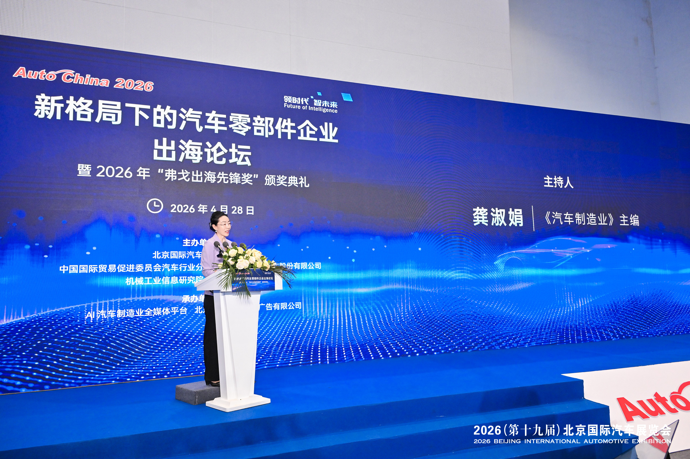
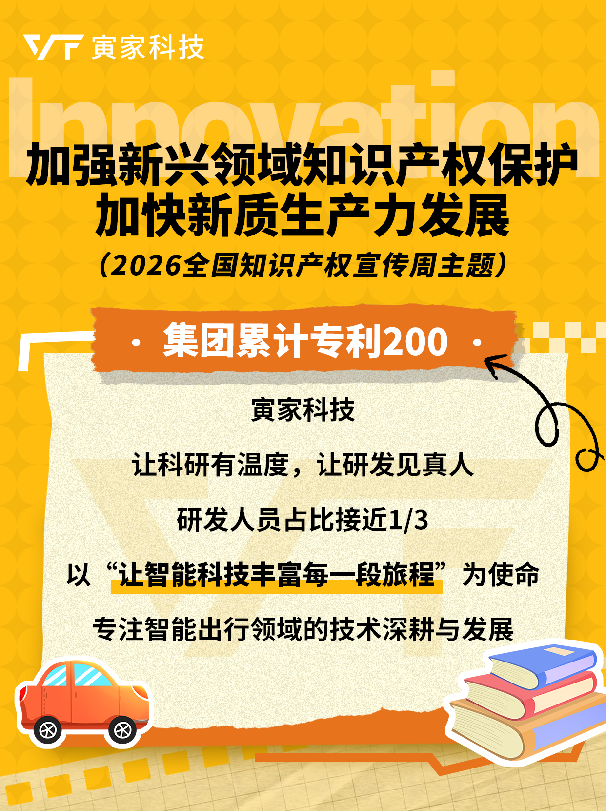
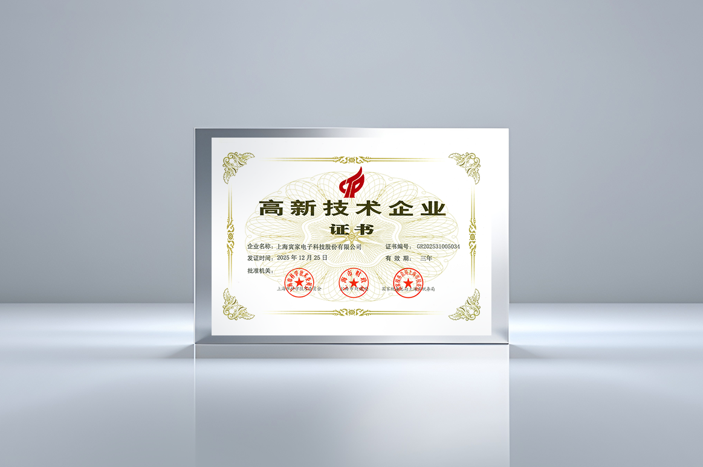
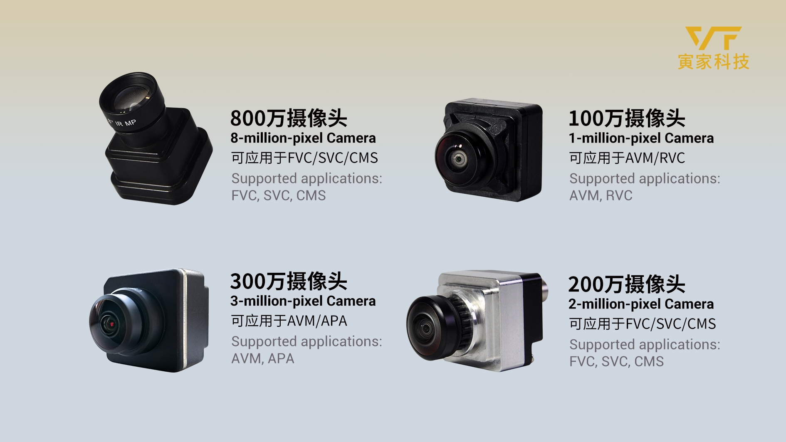
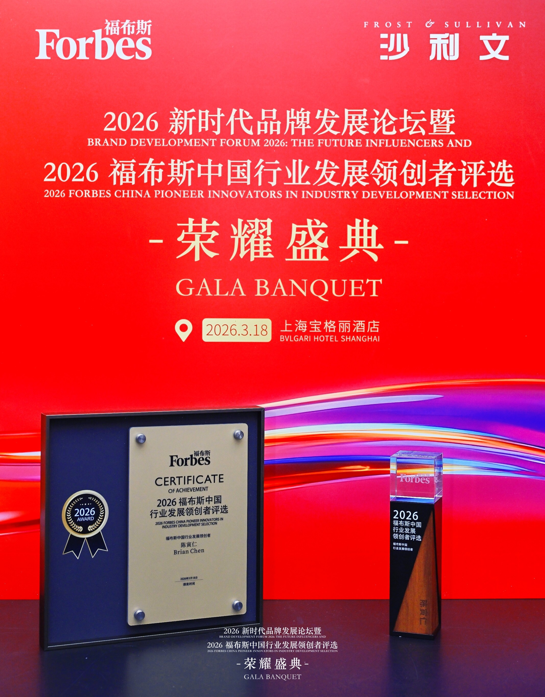

042026
中國智造，駛向全球！寅家科技斬獲弗戈出海先鋒獎
2026年北京國際車展期間，新格局下的汽車零部件企業出海論壇暨2026「弗戈出海先鋒獎」頒獎典禮在北京國際展覽中心圓滿舉辦。 《汽車製造業》主編龔淑娟女士致辭…
News Center

2026年北京國際車展期間，新格局下的汽車零部件企業出海論壇暨2026「弗戈出海先鋒獎」頒獎典禮在北京國際展覽中心圓滿舉辦。 《汽車製造業》主編龔淑娟女士致辭…

2026全國知識產權宣傳週，為原創打call！ 4月26日是世界知識產權日，4月20日-26日是2026全國知識產權宣傳週。…

上海寅家電子科技股份有限公司（以下簡稱“寅家科技”）正式通過國家高新技術企業複審，再次榮獲由上海市科學技術委員會、上海市財政局、國家稅務總局上海市稅務局聯合頒發…

2026年第一季度，寅家科技憑藉其自主研發的智能視覺感知技術方案，成功斬獲奇瑞商用車項目定點，將為奇瑞商用車全新車型提供高性能車規級3MP環視攝像頭產品。這標誌…

3月18日，寅家科技創始人兼CEO陳寅仁（Brian…

2026年3月13日，由中國能源汽車傳播集團指導、《中國汽車報》社主辦的2026汽車供應鏈生態夥伴大會在北京首都國際會展中心盛大啟幕。在同期舉辦的全球汽車供應鏈…
Video
「從地面智能到低空經濟和具身智能，寅家科技要做的不只是汽車行業，或是某個領域的參與者，我們希望在多元賽道做中國智能出行行業的長期建設者。」